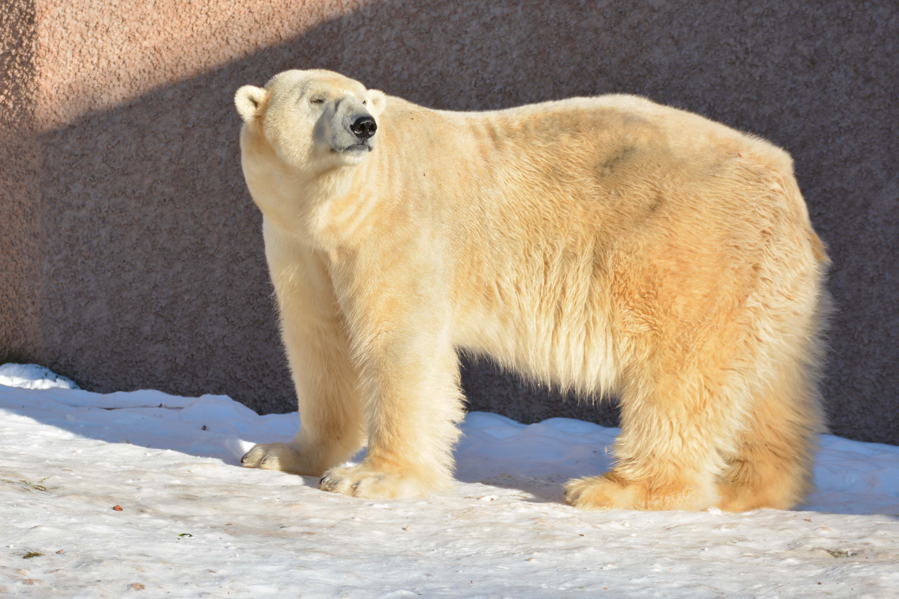

Polar Bears
Polar bears, designated as a vulnerable species by the International Union for Conservation of Nature (IUCN), primarily inhabit the Arctic region.
Scientific investigation and systematic observation of polar bears are imperative to gain comprehensive insights into their ecological requirements, behavior, and population dynamics.
Such research is pivotal for developing informed conservation strategies aimed at mitigating the threats posed to polar bear populations, which include habitat loss, anthropogenic disturbances, and potential alterations in prey availability.

Bats
The observation and recognition of individuals among bats, particularly through the analysis of their wing patterns, are crucial for various aspects of research and conservation efforts.
By identifying individual bats, researchers can track their movements, behaviors, and population dynamics.
Studying wing patterns facilitates the development of non-invasive monitoring techniques, reducing the need for disruptive or harmful methods of data collection in bat research.

Lynxes
Utilizing wildlife cameras for the observation of lynxes allows researchers to monitor lynx populations without directly interfering with their lives.
By identifying individual lynxes based on unique physical characteristics or markings, such as coat patterns or facial features, researchers can track their movements, assess habitat preferences, and study social interactions.
This non-invasive approach to monitoring lynx populations enables conservation efforts to be more effectively targeted, contributing to the long-term sustainability of lynx populations and their ecosystems.
Wolves
The observation and recognition of individuals within wolf populations are crucial for various aspects of research, management, and conservation efforts.
By identifying individual wolves, researchers can track their movements, behaviors, and social interactions, providing insights into pack dynamics, territory usage, and hunting strategies.
This information is invaluable for understanding wolf ecology and facilitating effective conservation measures.